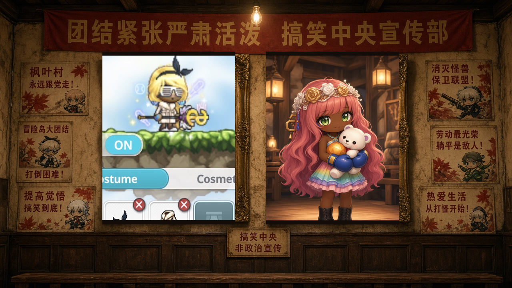
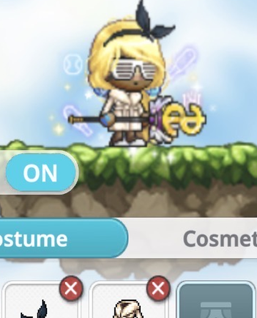
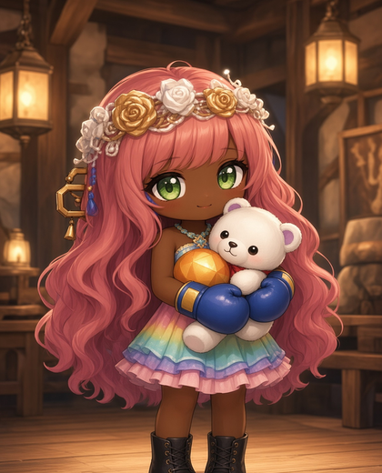

搞笑中央
非政治宣傳

NumbahWan · 總書記廳
第一視口＝會議室牆面。總書記 / 副書記主掛像主導，不是奶油紙上的小郵票。
大會
12月24日
入會
Join Freely
Lv
7 · 22/30
想来就来 · Join
主掛像 · 對照用裁切（Evidence）

總書記 RegginA · Exact Source refs/gs-costume.jpeg

副書記 RegginO · Exact Source assets/portraits/reggino.jpg
公會事實
總書記 RegginA · 副書記 RegginO
第一屆中央大會
12月24日
职衔：總書記 / 中央政委 / 黨員 / 預備黨員 · Join Freely